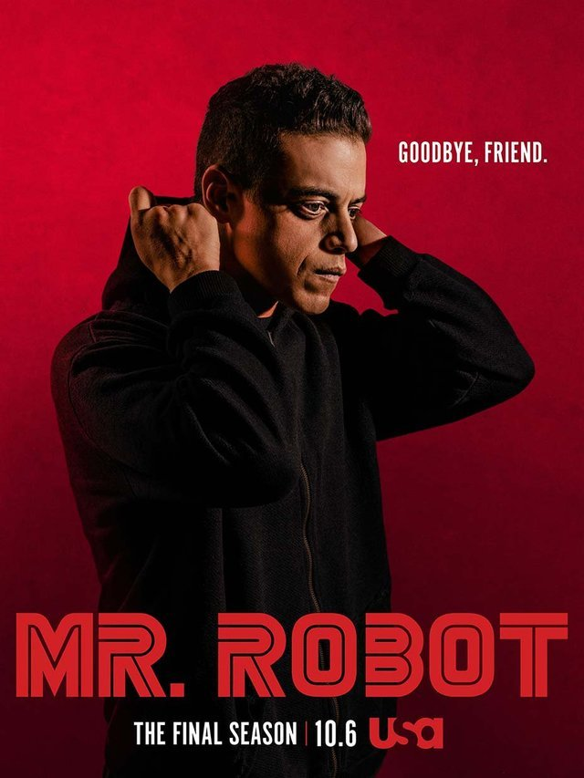
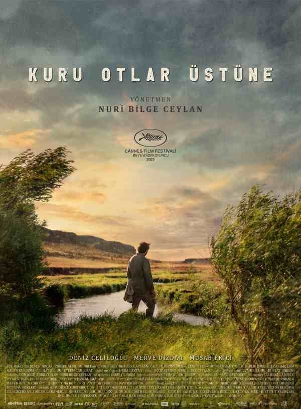

Anasayfa
Dizi Kategorisi
Mr. Robot
Tür: Drama Tekno gerilim Psikolojik gerilim
Konusu: Mr. Robot, hacker olan Elliot Alderson'ın, gizemli Mr. Robot’un liderliğindeki fsociety adlı grup ile büyük şirketlere karşı siber saldırılar düzenlemesini konu alır. Elliot, kişisel ve toplumsal sorunlarla mücadele ederken, sistemi alt üst etmeye çalışır.
Dizinin Detayına GitPeaky Blinders

Tür: Suç draması Tarihî dönem draması Psikolojik gerilim
Konusu: Peaky Blinders, 1920'lerde Birmingham, İngiltere'de geçen bir suç dramadır. Dizi, Shelby ailesinin lideri Thomas Shelby ve ailesinin, organize suç dünyasında yükselmesini takip eder. Peaky Blinders adlı çeteleri, yasadışı işlerle para kazanır ve rakip gruplarla, polisle ve siyasi güçlerle mücadele eder. Aile, hem içsel çatışmalarla hem de dış tehditlerle başa çıkmak zorundadır.
Dizinin Detayına GitDaha Fazla Dizi
Film Kategorisi
Prestige
<
Tür: Psikolojik gerilim
Konusu: The Prestige, iki sihirbazın birbirine rakip olmasını konu alır. Robert Angier ve Alfred Borden, her biri birbirinden şaşırtıcı illüzyonlar yaparak bir zamanlar arkadaşken, aralarındaki rekabet onları düşman yapar. Film, gizem, intikam ve hırsla örülmüş bir şekilde, her sihirbazın "büyüsünü" keşfetmeye çalışan bir hikayeye odaklanır.
Filmin Detayına GitKuru Otlar Üstüne
Tür: Dram/Kurgusal
Konusu: Kuru Otlar Üstüne, küçük bir kasabada öğretmenlik yapan Samet'in, kendi hayatındaki belirsizliklerle ve çevresindeki insanlarla başa çıkma mücadelesini konu alır. Film, Samet'in işinden, çevresel baskılardan ve içsel çatışmalarından kaçmaya çalışırken, aşk ve hayal kırıklığı ile yüzleşmesini anlatır.
Filmin Detayına GitDaha Fazla Film